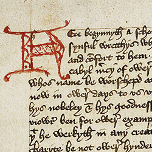

The Book of Margery Kempe:
Bibliography
Editor's note: We have provided this bibliography in HTML as a working document for the
convenience of users. We plan to code these entries in XML to make the bibliography easily searchable.
For now, we offer this relatively complete bibliography, and ask users to alert
us to any corrections or to items not included here.
Manuscript and Early Print
London, British Library, MS Additional 61823 (Sole surviving manuscript witness for
The Book of Margery Kempe)
Here begynneth a shorte treatyse of contemplacyon taught by our lorde Jhesu cryste, or
taken out of the boke of Margerie kempe of lyn[n]. London: Wynkyn de Worde,
1501 (STC 14924).
“A Short Treatyse of Contemplation taught by our Lord Jesu Christ, or taken out of the
Book of Margery Kempe, Ancress of Lynn.” In The Cell of Self-Knowledge:
seven Early English Mystical Treatises printed by Henry Pepwell mcxxi. Ed.
Edmund G. Gardner. London: Henry Pepwell, 1521. (STC 20972)
Editions
Kempe, Margery. The Book of Margery Kempe. EETS no. 212 O.S. London: Early
English Text Society, 1940.
-----. The Book of Margery Kempe, Fourteen Hundred and Thirty-Six. Ed. W. Butler-
Bowdon. New York: The Devlin-Adair Co., 1944.
-----. The Book of Margery Kempe. Ed. Barry A. Windeatt Woodbridge, UK: Brewer,
2004.
-----. The Book of Margery Kempe. Ed. Lynn Staley. Kalamazoo, MI: Medieval
Institute Texts, 1996.
-----. Il libro di Margery Kempe. Autobiografia spirituale di una laica del Quattrocento.
Ed. G. Del Lungo Camiciotti. Milano: Àncora, 2002.
Translations
The Book of Margery Kempe 1436: A Modern Version. Trans. W. Butler-Bowdon,
London, Cape, 1936; rept. Oxford: Oxford University Press, 1956.
The Book of Margery Kempe. Trans. Barry A. Windeatt. Harmondsworth, UK:
Penguin, 1985.
Le livre: une mystique anglaise au temps de l'hérésie lollarde. (French) Trans. Daniel
Vidal. Sainte-Agnès: Millon,1987.
Le livre de Margery Kempe: une aventurière de la foi au Moyen Âge. (French) Trans.
Louise Magdinier. Paris: Cerf, 1989.
The Autobiography of the Madwoman of God: The Book of Margery Kempe. A New
Translation. Trans. Tony D. Triggs. Ligouri: Triumph Books, 1995.
The Book of Margery Kempe. Trans. John Skinner. New York, Doubleday, 1998.
The Book of Margery Kempe, A New Translation, Contexts and Criticism. Trans. and ed.
Lynn Staley. New York, Norton, 2001
The Book of Margery Kempe: An Abridged Translation. Translated from the Middle
English with Introduction, Notes and Interpretive Essay. Trans. Liz Herbert
McAvoy. Woodbridge, UK and Rochester, NY: Brewer, 2003.
Performances and Retellings
Figes, Eva. The True Tale of Margery Kempe. London, BBC Radio 2, 1985.
Glück, Robert. Margery Kempe. High Risk Books, 1994.
Secondary Texts
Adams, J. “Breaking the waves: Margery Kempe goes south.” Studies in Medieval and Renaissance Teaching 18(2011): 97-109.
Aers, David. Community, Gender and Individual Identity. English Writing 1360-1430.
London: Routledge, 1988.
Akel, C. S. “'... A Schort Tretys and a Comfortybl ...': Perception and purpose of Margery Kempe’s narrative.” English Studies 82(2001): 1-13.
Allen, V. “As the crow flies: Roads and pilgrimage.” Essays in Medieval Studies 25(2009): 27-38.
Armstrong, Elizabeth Psakis. “ ‘Understanding by Feeling’ in Margery Kempe’s Book.”
In Margery Kempe: A Book of Essays, ed. Sandra McEntire, New York: Garland
Publishing, Inc, 1992. 17-36.
Arnell, C. “Chaucer's Wife of Bath and John Fowles's Quaker Maid: Tale-telling and the trial of personal experience and written authority.” Modern Language Review 10 (2007): 933-946.
Arnold, John H. and Katherine J. Lewis. A Companion to the Book of Margery Kempe,
Woodbridge, UK: Boydell and Brewer, 2004.
Arnold, John. H. “Margery’s Trials: Heresy, Lollardy and Dissent.” In Arnold and Lewis,
A Companion to the Book of Margery Kempe. 75-94.
Atkinson, Clarissa W. Mystic and Pilgrim: The Book and the Word of Margery Kempe.
Ithaca: Cornell University Press, 1983.
G. Ballard, “Memoirs of Margery Kempe.” In Memoirs of Several Ladies of Great
Britain: Who Have Been Celebrated for Their Writings or Skill in the Learned
Languages, Arts, and Sciences.Oxford: W. Jackson, 1752), 8.
Bagshaw, D., & Bagshaw, D. Cell talk: A duologue between Julian of Norwich and Margery Kempe. Peterborough: Radius, 2002.
Barratt, Alexandra. “Margery Kempe and the King’s Daughter of Hungary.” In Margery
Kempe: A Book of Essays, ed. Sandra McEntire. New York: Garland, 1992. 189-
201.
Barron, Caroline M. Pilgrim souls: Margery Kempe and other women pilgrims. London: Confraternity of Saint James, 2004.
Bartlett, A. “Reading it personally: Robert Glük, Margery Kempe, and
language in crisis.” Exemplaria 16(2004): 437-456.
Bennett, H. S., Six Medieval Men and Women, Cambridge, Cambridge University Press,
1955
Bhattacharji, Santha. God Is An Earthquake: The Spirituality of Margery Kempe,
London: Darton, Longman, and Todd, 1997.
-----. "The Uses of Corpus Christi and The Book of Margery Kempe." In Christ's Body:
Identity, Culture and Society in Late Medieval Writings. London: Routledge,
1993. 78-111.
-----. “Problems of Authority in Late Medieval English Mysticism: Agency and Authority
in The Book of Margery Kempe.” Exemplaria 4 (1992): 171-200.
-----. "A Very Material Mysticism: The Medieval Mysticism of Margery Kempe." In
Medieval Literature: Criticism, Ideology and History, ed. David Aers. Brighton:
Harvester Press, 1986. 34-57.
Boffey, Julia. “Middle English Lives.” In The Cambridge History of Medieval English
Literature, ed. David Wallace. Cambridge: Cambridge University Press, 1999.
610-634.
Bosse, R. B., “Margery Kempe's tarnished reputation: a reassessment.” Fourteenth-
Century Mystics Newsletter 5 (1979): 9-19.
Bowers, Terence N. “Margery Kempe as Traveler.” Studies in Philology 97 (2000): 1-28.
Bradford, C. “Mother, Maiden, Child: Gender as Performance in The Book of Margery
Kempe.” In Feminist Poetics of the Sacred: Creative Suspicions. Ed. F. Devlin-
Glass and L. McCredden. Oxford: Oxford University Press, 2001. 165-181.
Call, J. “The song of Margery Kempe.” Christianity & Literature 50 (2001): 439.
Castagna, Valentina. “Margery Kempe and her becoming Authoress.” Textus 19 (2006):
323-337.
-----. Re-Reading Margery Kempe in the 21st Century. New York: P.Lang, 2011.
Chance, Jane. “Unhomely Margery Kempe and St. Catherine of Siena: ‘Comunycacyon’
and ‘conuersacion’ as Homily.” In The Literary Subversions of Medieval Women.
New York: Palgrave Macmillan, 2007. 99-126.
Cherewatuk, K. “Becoming Male, Medieval mMothering, and Incarnational Theology in Sir Gawain and the Green Knight and the Book of Margery Kempe.” Arthuriana 19 (2009): 15-24.
Cholmeley, Katharine. Margery Kempe, Genius and Mystic. New York: Longmans,
Green, and Co., 1947.
Christie, S. “'Thei stodyn upon stoyls for to beheldyn hir': Margery Kempe and the power
of performance.” Studia Anglica Posnaniensia: An International Review of
English Studies 38 (2002): 93-103.
Clark, K. “Purgatory, punishment, and the discourse of holy widowhood in the high and
later Middle Ages.” Journal of the History of Sexuality 16 (2007): 169-203.
Cleve, Gunnel. "Semantic Dimensions in Margery Kempe: 'Whyght Clothys'." Mystics
Quarterly 12, no. 4 (Dec. 1986): 162-70.
-----. “Margery Kempe: A Scandinavian Influence in Medieval England?” In The
Medieval Mystical Tradition in England, Vol. 4, ed. Marian Glasscoe.
Woodbridge, Suffolk: D. S. Brewer, 1992. 162-178.
Cobb, M. “Orthodox editing: medieval versions of Julian of Norwich's Revelations of
Divine Love and The Book of Margery Kempe.” Leeds Studies in English 35
(2004): 57-79.
Collett, Barry, Travitsky, Betty, and Prescott, Anne Lake. Late Medieval Englishwomen: Julian of Norwich, Marjorie Kempe and Juliana Berners. Aldershot, UK: Ashgate, 2007.
Collis, Louise. The Apprentice Saint. London: M. Joseph, 1964.
-----. Memoirs of a Medieval Woman: The Life and the Times of Margery Kempe. New
York: Harper Colophon Books, 1983.
Colón, S. “‘Gostly labowrys’: Vocation and profession in The Book of Margery Kempe.”
English Studies 86 (2005): 283-297.
Cooper, C. F. “Miraculous translation in The Book of Margery Kempe.” Studies in Philology 101 (2004): 270-298.
Cooper-Rompato, Christine F. “’An Alien to Understand Her’: Miraculous and Mundane
Translation in The Book of Margery Kempe.” In The Gift of Tongues: Women’s
Xenoglossia in the Later Middle Ages. University Park, PA: Pennsylvania State
University Press, 2010. 103-142.
-----. The voice of the redbreast in the Book of Margery Kempe. Magistra 16 (2010): 77-
93.
Corbus, Patricia. “Poem: Homage to a Poor Caitiff, Margery Kempe." Mystics Quarterly
15, no. 4 (Dec.1986): 165.
Craig, L. ‘”Stronger than men and braver than knights’: Women and the pilgrimages to
Jerusalem and Rome in the later middle ages.” Journal of Medieval History 29
(2003): 153.
Cullum, P. H. “‘Yf lak of charyte be not ower hynderawance’: Margery Kempe, Lynn,
and the Practice of the Spiritual and Bodily Works of Mercy.” In Arnold and
Lewis, A Companion to the Book of Margery Kempe. 177-194.
Davis, Isabel. “Men and Margery: Negotiating Medieval Patriarchy.” In Arnold and
Lewis, A Companion to the Book of Margery Kempe. 35-54.
Delany, Sheila. “Sexual Economics, Chaucer’s Wife of Bath and The Book of Margery
Kempe.” Minnesota Review 5 (1975): 104-15.
Dickman, Susan. "Margery Kempe and the Continental Tradition of the Pious Woman."
In The Medieval Mystical Tradition in England, Vol. 3, ed. Marion Glasscoe.
Cambridge: D.S. Brewer, 1984. 150-68.
-----. “Margery Kempe and the English Devotional Tradition.” In The Medieval Mystical
Tradition in England, Vol 1. Ed. Marion Glasscoe. Exeter: Exeter University
Press, 1980. 156-72.
-----. “A Showing of God’s Grace: The Book of Margery Kempe.” In Mysticism and
Spirituality in Medieval England. Ed. William F. Pollard and R. Boenig.
Woodbridge, Suffolk: D. S. Brewer. 159-76.
Dillon, Janet. “Margery Kempe’s Sharp Confessors.” Leeds Studies in English, n.s. 27
(1996): 131-38.
-----. “Holy Women and Their Confessors or Confessors and Their Holy Women?
Margery Kempe and Continental Tradition.” In Prophets Abroad: The Reception
of Continental Holy Women in Late-Medieval England. Ed. Rosalyn Voaden.
Cambridge: Brewer, 1996. 115-140.
-----. “The Making of Desire in The Book of Margery Kempe.” Leeds Studies in
English, n.s. 26 (1995): 114-44.
Dinshaw, Carolyn. “Margery Kempe Answers Back.” Getting Medieval: Sexualities and
Communities, Pre- and Postmodern. Durham, NC: Duke University Press, 1999.
143-82.
Donnelly, C. “Menopausal life as imitation of art: Margery Kempe and the lack of
sorority.” Women's Writing 12 (2005): 419-32.
Drucker, T. “The Malaise of Margery Kempe.” New York State Journal of Medicine 72
(1972): 2911-17.
Eberly, Susan. "Margery Kempe, St. Mary Magdalene, and Patterns of Contemplation."
Downside Review 107 (1989): 209-23.
Ebersole, G. L. “The Function of Ritual Weeping Revisited: Affective expression and
moral discipline.” History of Religions 39 (2000): 211-46.
Ellis, Deborah. “Margery Kempe and the Virgin’s Hot Caudle.” Essays in Arts and
Sciences 14 (1985): 1-11.
-----. “Margery Kempe and King’s Lynn.” In Margery Kempe: A Book of Essays. Ed.
Sandra McEntire, 139-64. New York: Garland, 1992.
-----. “The Merchant’s Wife’s Tale: Language, Sex, and Commerce in Margery Kempe
and in Chaucer.” Exemplaria 2 (1990): 595-626.
Erwin, Rebecca Schoff, “Early Editing of Margery Kempe in Manuscript and Print,”
Journal of the Early Book Society 9 (2006): 75-94.
Erskine, John. "Margery Kempe and Her Models: The Role of the Authorial Voice."
Mystics Quarterly 15 (1989): 75-85.
Samuel Fanous, “Measuring the Pilgrim’s Progress: Internal Emphases in The Book of
Margery Kempe.” In Writing Religious Women: Female spiritual and textual
practices in late medieval England. Ed. Denis Renevey and Christiania
Whitehead. Toronto, University of Toronto Press, 2000. 157-178.
Fienberg, Nona. “Thematics of Value in The Book of Margery Kempe.” Modern
Philology 87 (1989): 132-141.
Foster, Allyson, “A Shorte Treatyse of Contemplacyon: The Book of Margery Kempe in
Its Early Print Contexts,” In Arnold and Lewis, A Companion to the Book of
Margery Kempe. 95-112.
Fredell, Joel. “Design and Authorship in the Book of Margery Kempe.” Journal of the
Early Book Society, 12 (2009): 1-34.
-----. “Margery Kempe: Spectacle and Spiritual Governance.” Philological Quarterly 75
(1996): 132-141.
Fries, Maureen. “Margery Kempe.” In An Introduction to the Medieval Mystics of
Europe. Ed. Paul Szarmach. Albany: SUNY Press. 217-235.
Gallyon, Margaret. Margery Kempe of Lynn and Medieval England. Norwich:
Canterbury Press, 1995.
Garrett, Charlotte. "The Soul Journey of Margery Kempe: Hysteria, Vision, and
Record." InSovereign Lady: Essays on Women in Middle English Literature.
Ed. Muriel Whitaker. Garland Reference Library of the Humanities,v. 11. New
York: Garland, 1995. 157-70.
Gastle, B. W. Breaking the stained glass ceiling: mercantile authority, Margaret Paston,
and Margery Kempe. Studies in The Literary Imagination 36 (2003): 123-47.
Gibson, Gail McMurray. “St. Margery: The Book of Margery Kempe.” In The Theater of
Devotion: East Anglian Drama and Society in the Late Middle Ages. Chicago:
University of Chicago Press, 1989. 47-65.
Glenn, Cheryl. "Author, Audience and Autobiography: Rhetorical Technique in The Book
of Margery Kempe." College English 54 (1992): 540-553.
-----. “Reexamining The Book of Margery Kempe: a rhetoric of autobiography.” In
Reclaiming Rhetorica: Women in Rhetorical Tradition. Ed. Andrea A. Lunsford,
Pittsburgh, PA: University of Pittsburgh Press, 1995. 53-72.
-----. “Popular Literacy in the Middle Ages: The Book of Margery Kempe.” In
Popular Literacy: Studies in Cultural Practices and Poetics. Ed. John Trimbur.
Pittsburgh, PA: University of Pittsburgh Press, 2001. 56-73.
Goodman, Anthony. “The Piety of John Brunham’s Daughter of Lynn.” In Medieval
Women. Ed. Derek Baker. Oxford: Blackwell, 1978. 347-58.
Goodman, Anthony E., Margery Kempe and Her World, Old Tappin, NJ: Longman,
2004.
González-Álvarez, D., & Pérez-Guerra, J. “Profaning Margery Kempe's tomb or the application of a Constraint-Grammar Parser to a late Middle English text.” International Journal of Corpus Linguistics 9 (2004): 225-51.
Gracey, A. B. “The mystery surrounding The Book of Margery Kempe and its connection
with the monks of Mount Grace.” Magistra 15 (2009): 20-38.
Gregory, James Ryan. “’Open therefore the eyes of thine intellect:’ Margery Kempe and
The Orcherd of Syon.” Magistra 17 (2011): 89-128.
Hall, K. A. “Teaching Margery Kempe in tandem with The Wife of Bath: Lollardy,
mysticism, and ‘wandrynge by the weye’." South Atlantic Review 72 (2007): 59-
71.
Harding, Wendy. "Body into Text: The Book of Margery Kempe." In Feminist
Approaches to the Body in Medieval Literature. Ed. Linda Lomperis and Sarah
Stanbury. Philadelphia: University of Pennsylvania Press, 1993. 168-87.
Harvey, Nancy Lenz. "Margery Kempe: Writer as Creature." Philological Quarterly 71
(1992): 173-84.
Herbert, M. A. L. Authority and the female body in the writings of Julian of Norwich and Margery Kempe. Woodbridge, Suffolk: D.S. Brewer, 2004.
Herzog, B. “The Augustinian subject, Franciscan piety, and ‘The Book of Margery Kempe’: An affective appropriation and subversion of authority.” Philological Review 30 (2004): 67-88.
Higgs, Laquita. "Margery Kempe: 'Whete-Breed or Barely-Breed?’" Mystics Quarterly
13 (1987): 57-64.
Harvey, Nancy L. “Margery Kempe: Writer as Creature.” Philological Quarterly 71
(1992): 173-84.
Hinderer, D. E. “On Rehabilitating Margery Kempe.” Studia Mystica 5 (1982): 27-43.
Hirsh, John C. “Author and Scribe in The Book of Margery Kempe.” Medium Aevum 44
(1975): 145-150.
-----. “Margery Kempe.” In Middle English Prose: A Critical Guide to Major Authors
and Genres. Ed. A.S.G. Edwards. New Brunswick: Rutgers Univ. Press, 1984.
109-19.
-----. The Revelations of Margery Kempe: Paramystical Practices in Late Medieval
England. Leiden: Brill, 1989.
Holbrook, Sue Ellen. “Order and Coherence in The Book of Margery Kempe.” In The
Worlds of Medieval Women: Creativity, Influence, and Imagination. Ed.
Constance Berman et al. Morgantown, VA: West Virginia University Press, 1985.
97-110.
-----. “Margery Kempe and Wynkyn de Worde,” in The Medieval Mystical Tradition in
England, Vol. 4. Ed. Marion Glasscoe. Woodbridge, Suffolk: D. S. Brewer. 27-
46.
-----. “‘About Her’: Margery Kempe’s Book of Telling and Working.” In The Idea of
Medieval Literature. Ed. James Dean and Christian Zacher. Newark: University
of Delaware Press. 265-84.
Holloway, Julia B. “Bride, Margery, Julian and Alice: Bridget of Sweden’s Textual
Community in Medieval England.” In Margery Kempe: A Book of Essays, ed.
Sandra J. McEntire. New York: Garland, 203-21.
Hoppenwasser, Nanda. “The Human Burden of the Prophet: St. Birgitta’s Revelations
and The Book of Margery Kempe.” Medieval Perspectives 8 (1993): 153-62.
-----. “A Performance Artist and Her Performance Text: Margery Kempe on Tour.” In
Performance and Trans-formation: New Approaches to Late Medieval
Spirituality. Ed. M. A. Suydam and J. E. Ziegler. New York: St. Martin’s Press,
1999. 97-131.
-----, and Signe Wegener. “Vox matris: the influence of St. Birgitta's Revelations on The
Book of Margery Kempe: St. Birgitta and Margery Kempe as wives and mothers.”
In Crossing the Bridge: Comparative Essays on Medieval European and Heian
Japanese Women Writers. Ed. Barbara Stevenson and Cynthia Ho. New York,
Palgrave, 2001. 61-87.
Hostetler, M. “'I wold thow wer closyd in an hows of ston': Re-imagining religious enclosure in the Book of Margery Kempe.” Parergon: Journal of the Australian and New Zealand Association for Medieval and Early Modern Studies 20 (2003): 71-94.
Howes. L. L. “On the Birth of Margery Kempe’s Last Child.” Modern Philology 90
(1992): 220-225.
Hsy, J. "Be more strange and bold": Kissing lepers and female same-sex desire in The
Book of Margery Kempe.” Early Modern Women: An Interdisciplinary Journal 5
(2010): 189-199.
Jenkins, Jacqueline, “Reading and The Book of Margery Kempe.” In Arnold and Lewis,
A Companion to The Book of Margery Kempe. 113-28.
Kamerick, Kathleen. “Art and Moral Vision in Angela of Foligno and Margery Kempe,”
Mystics Quarterly 21 (1995): 148-58.
Kang, J. “Lollard repression, affective piety and Margery Kempe.” Feminist Studies in English Literature 11 (2003): 43-72.
Kelliher. H. “The Rediscovery of Margery Kempe: A Footnote.” The British Library
Journal 23 (1997): 259-63.
Kerby-Fulton, Kathryn. “Urban Devotion and Female Preaching: Constraint and
Encouragement in England and Abroad.” In Books Under Suspicion: Censorship
and Tolerance of Revelatory Writing in Late Medieval England. Notre Dame, IN:
University of Notre Dame Press, 2006. 247-59.
Kirtley, S. “Divine dialogues: Margery Kempe's conversations with Christ.” Exit 9: The
Rutgers Journal of Comparative Literature 7 (2005): 41-53.
Kiser, Lisa J. “Margery Kempe and the animalization of Christ: animal cruelty in late medieval England.” Studies in Philology 106 (2009): 299-315.
Klan, N. “Affective piety and Pentecostal evangelism: Experimental theology and The Book of Margery Kempe.” Religion & Literature 42 (2010): 163-84.
Knowles, David. “Margery Kempe and Dame Julian.” In The English Mystical Tradition.
London: Burns and Oates, 1927; rept. 1961. 128-49.
Kolentsis, A. “Telling the grace that she felt: Linguistic strategies in The Book of
Margery Kempe.” Exemplaria 20 (2008): 225-43.
Krug, Rebecca. “Margery Kempe.” In The Cambridge Companion to Medieval English
Literature 1100-1500. Ed. Larry Scanlon. Cambridge, UK: Cambridge
University Press, 2009.
-----. “Jesus’ Voice: Dialogue and Late-Medieval Readers.” In Form and Reform:
Reading across the Fifteenth Century. Ed. Shannon Gayk and Kathleen Tonry.
Columbus: Ohio State University Press, 2011. 110-32.
Ladd, R. A. “Margery Kempe and her mercantile mysticism.” Fifteenth-Century Studies 26 (2001):121-41.
Lawton, David. “Voice, Authority and Blasphemy in The Book of Margery Kempe.” In
Margery Kempe: A Book of Essays. Ed. Sandra McEntire. New York: Garland,
1992. 93-115.
LeSaux, F. “‘Hir Not Lettryd’: Margery Kempe and Writing.” In Writing and Culture.
Ed. Balz Engler. Tubingen: G. Narr, 1992. 53-8.
Lewis, Katherine J. “Margery Kempe and Saint Making in Later Medieval England.” In
Arnold and Lewis, A Companion to the Book of Margery Kempe. 195-216.
Leyser, H. "Women and the word of God", In Women and Religion in
Medieval England. Ed. D. Wood. Oxford: Oxbow, 2003. 32–45.
Lipton, Emma. “The Marriage of Love and Sex: Margery Kempe and Bourgeois Lay
Identity.” In Affections of the Mind: The Politics of Sacramental Marriage in Late
Medieval Literature. Notre Dame, IN: University of Notre Dame Press, 2007.
129-60.
Lochrie, Karma. “The Book of Margery Kempe: The Marginal Woman’s Quest for
Literary Authority.” Journal of Medieval and Renaissance Studies 16 (1986): 33–
55.
-----. Margery Kempe and Translations of the Flesh. Philadelphia: University
of Pennsylvania Press, 1991.
Long, J. “Mysticism and Hysteria: The Histories of Margery Kempe and Anna O.” In
Feminist Readings in Middle English Literature, ed. Ruth Evans and Leslie
Johnson. London: Routledge, 1994, 88-111.
Manter, L. “The savior of her desire: Margery Kempe's passionate gaze.” Exemplaria 13 (2001): 39-66.
Mazzoni, C. “Of stockfish and stew: feasting and fasting in The Book Margery Kempe.”
Food & Foodways: History & Culture of Human Nourishment 10 (2002): 171-
82.
McAvoy, Liz Herbert. “'Aftyr hyr owyn tunge': Body, voice and authority in The Book of
Margery Kempe.” Women's Writing 9 (2002): 159-76.
-----. Authority and the Female Body in the Writings of Julian of Norwich and Margery
Kempe, Woodbridge, UK and Rochester, NY: Boydell, 2004.
-----. “Virgin, Mother, Whore: The Sexual Spirituality of Margery Kempe.” In
Intersections of Sexuality and the Divine in Medieval Culture: The Word Made
Flesh. Ed. S. M. Chewning. Aldershot, UK: Ashgate, 2005. 121-38.
-----. “”[A}n awngel al clothyd in white’: Rereading the Book of Life and The Book of
Margery Kempe.” In Women and Experience in Later Medieval Writing: Reading
the Book of Life. Ed. Anneke Mulder-Bakker and Liz Herbert Mcvoy. New York:
Palgrave Macmilllan, 103-22.
McEntire, Sandra J. “The Doctrine of Compunction from Bede to Margery Kempe.” In
The Medieval Mystical Tradition in England, Vol. 4. Ed. Marion Glasscoe.
Woodbridge, Suffolk, D. S. Brewer, 1987, 77-90.
-----. Margery Kempe: A Book of Essays. New York: Garland, 1992.
-----. “The Journey into Selfhood: Margery Kempe and Feminine Spirituality.” In
McIntire, Margery Kempe: A Book of Essays. 51-72.
-----. “The dialogics of Margery Kempe and her Book.” Mystics Quarterly 26 (2000):
179-97.
McIntyre, R. “Margery's ‘mixed life’: place pilgrimage and the problem of genre in The
Book of Margery Kempe.” English Studies 89 (2008): 643-61.
Mahoney, Dhira. “Margery Kempe’s Tears and the Power over Language.” In McIntire,
Margery Kempe: A Book of Essays. 37-50.
Maissonneuve, R. “Margery Kempe and the Eastern and Western Tradition of the
‘Perfect Fool’.” In The Medieval Mystical Tradition in England, Vol. 2. Ed.
Marion Glasscoe. Exeter: University of Exeter Press, 1982. 1-17.
Mitchell, Marea, “Uncanny dialogues: ‘The Journal of Mistress Joan Martyn’ and The
Book of Margery Kempe.” In Maistresse of my Wit: Medieval Women, Modern
Scholars. Ed. Louise D'Arcens and Juanita Feros Ruys. Brepols: Turnhout, 2004.
247-66.
-----. The Book of Margery Kempe: Scholarship, Community, & Criticism. New
York: P. Lang, 2005.
Mongan, O. “Slanderers and saints: The function of slander in The Book of Margery
Kempe.” Philological Quarterly 84 (2005): 27-47.
Morse, Mary. “Seeing and Hearing: Margery Kempe and the mis-en-page.” Studia
Mystica 20 (1999) 15-42.
-----. “'Tak and bren hir': Lollardy as conversion motif in The Book of Margery Kempe.”
Mystics Quarterly 29 (2003): 24-44.
Mueller, Janel M. "Autobiography of a New 'Creatur': Female Spirituality, Selfhood and
Authorship in The Book of Margery Kempe." In The Female Autograph: Theory
and Practice of Autobiography from the 10th to the 20th Century. Ed. Domna C.
Stanton. Chicago: University of Chicago Press, 1984. 57-69.
Myers, Michael D. “A Fictional-True Self: Margery Kempe and the Social Reality of the
Merchant Elite of King's Lynn.” Albion: A Quarterly Journal Concerned with
British Studies 31 (1999): 377-394.
Nelson, M. “From The Book of Margery Kempe: The trials and triumphs of a homeward journey.” Oral Tradition 19 (2004): 214-235.
-----. "’Why gost thu in white?’: A non-question reconsidered as a genuine request for
information.” Papers on Language & Literature 48 (2012): 101-108.
Neuburger, Varena. Margery Kempe: A Study in Early Feminism. New York: P. Lang,
1994.
Padden, L. “Locating Margery Kempe.” Anachronist 16 (2011): 1-17.
Parker, Kate. “ Lynn and the Making of a Mystic.” In Arnold and Lewis, A Companion to
the Book of Margery Kempe. 55-74.
Parsons, Kelly, “The Red Ink Annotator of The Book of Margery Kempe and His Lay
Audience,” In The Medieval Professional Reader at Work: Evidence from
Manuscripts of Chaucer, Langland, Kempe, and Gower, ed. Kathryn Kerby-
Fulton, and Maidie Hilmo. Victoria, BC: University of Victoria Press, 2001. 217-
238.
Partner, Nancy. “ ‘And Most of All for Inordinate Love’: Desire and Denial in The Book
of Margery Kempe.” Thought 64 (1989): 250-267.
-----. “Reading the Book of Margery Kempe.” Exemplaria 3 (1991): 29-66.
Passmore, S. “Painting lions, drawing lines, writing lives: Male authorship in the lives of
Christina of Markyate, Margery Kempe, and Margaret Paston.” Medieval
Feminist Forum 36 (2003): 36-40.
Petersen, Zina, “Teaching Margery and Julian in anthology-based survey courses.”
College English, 68 (2006): 481-501.
Phillips, Kim, “Margery Kempe and the Ages of Woman.” In Arnold and Lewis, A
Companion to the Book of Margery Kempe.17-34.
Daniel Pigg, “Medieval Traditions of Textual Formation,” Studia Mystica 16 (1995):
106-115.
Porter, Roy. “Margery Kempe and the Meaning of Madness.” History Today 38 (1988):
39-44.
Powell, Raymond A. "Margery Kempe: An Exemplar of Late Medieval English Piety."
Catholic Historical Review 89 (2003): 1-23.
Reis, H. “'[S]che was evry aferd': Pilgrimage and medieval women in The Book of
Margery Kempe.” Edebiyat Fakültesi Dergisi/Journal of the Faculty of Letters 22
(2005): 151-61.
Riddy, Felicity,“Text and Self in The Book of Margery Kempe” In Voices in Dialogue:
Reading Women in the Middle Ages. Ed. Linda Olson and Kathryn Kerby-Fulton.
Notre Dame, IN: University of Notre Dame Press, 2005. 435-53.
Roberts, Ruth R. “Illuminating the Soul: Religious Enclosure and the Validation of
Mystical Experience in The Life of Christina of Markyate and The Book of
Margery Kempe.” Marginalia 3 (2006):
http://www.marginalia.co.uk/journal/06illumination/roberts.php.
Roman, Christopher. Domestic Mysticism in Margery Kempe and Dame Julian of
Norwich: The Translation of Christian Spirituality in the Late Middle Ages.
Lewiston, NY: Mellen, 2005.
Ross, Ellen M. “‘She Wept and Cried Right Loud for Sorrow and for Pain’: Suffering,
the Spiritual Journey, and Women’s Experience in Late Medieval Mysticism.” In
Maps of Flesh and Light. Ed. Ulrike Wiethaus. Syracuse: Syracuse University
Press, 1993. 45-59.
-----. “Spiritual Experience and Women's Autobiography: The Rhetoric of Selfhood in
The Book of Margery Kempe." Journal of the American Academy of Religion 59
(1991): 527-46.
Ross, R. C. “ ‘Oral Life, Written Text: The Genesis of The Book of Margery Kempe.”
Yearbook of English Studies 22 (1992): 226-37.
Russell, D. “Margery Kempe and Caterina Benincasa: Female Mystics in England and
Italy.” Textus 24 (2011): 449-61.
Salih, Sarah. “Margery’s Bodies: Piety, Work and Penance.” In Arnold and Lewis, A
Companion to the Book of Margery Kempe. 161-76.
Sanok, Catherine. “Hagiography and Historical Comparison in The Book of Margery
Kempe.” In Her Life Historical: Exemplarity and Female Saints’ Lives in Late
Medieval England (Philadelphia. PA: University of Pennsylvania Press, 2007.
116-44.
Shklar, R. “‘Cobham’s Daughter’: The Book of Margery Kempe and the Power of
Heterodox Thinking.” Modern Language Quarterly 56 (1995): 277-304.
Slade, C. “The Mystical Experience of Angela of Foligno and Margery Kempe.” Religion
and Literature 23 (1991): 109-26.
Smith, Sidonie. “The Book of Margery Kempe: This creature’s unsealed life.” In A
Poetics of Women’s Autobiography: Marginality and the Fictions of Self-
Representation. Bloomington: Indiana Univ. Press, 1987. 42-81.
Spearing, A. C. “The Book of Margery Kempe; Or, the diary of a nobody.” Southern
Review 38 (2002): 625-635.
Sponsler, Claire. “Drama and Piety: Margery Kempe.” In Arnold and Lewis, A
Companion to the Book of Margery Kempe. 129-44.
Staley, Lynn. Margery Kempe's Dissenting Fictions. University Park: Pennsylvania
State University Press, 1994.
----- [Johnson]. "Margery Kempe: Social Critic." Journal of Medieval and Rennaissance
Studies 22 (1992): 159-84.
----- [Johnson]. "The Trope of the Scribe and the Question of Literary Authority in the
Works of Julian of Norwich and Margery Kempe," Speculum 66 (1991): 820-
38.
Stanton, R. “Lechery, Pride, and the Uses of Sin in The Book of Margery Kempe.”
Journal of Medieval Religious Cultures 36 (2010): 169-204.
Startgardt, U. “The Beguines of Belgium, the Dominican Nuns of Germany, and Margery
Kempe.” In The Popular Literature of Medieval England. Ed. Thomas J.
Heffernan. Knoxville: University of Tennessee Press, 1985. 277-313.
Stevenson, B. “Autobiographical firsts: The Book of Margery Kempe and The Sarashina
Diary.” Medieval Perspectives 15 (2000): 81-93.
Stokes, Charity Scott. “Margery Kempe: Her Life and the Early History of her Book.”
Mystics Quarterly 25 (1999): 1-68.
Stone, Robert Karl. Middle English Prose Style: Margery Kempe and Julian of Norwich.
The Hague: Mouton, 1970.
Swanson, R. "Will the Real Margery Kempe Please Stand Up!” In Women and Religion
in Medieval England. Ed. Diane Wood. Oxford: Oxbow, 2003. 141–65.
Szell, Timea K. “From Woe to Weal to Woe: Notes on the Structure of the Book of
Margery Kempe.” In McIntire, Margery Kempe: A Book of Essays. 73-92.
Tarvers J. K. “The Alleged Illiteracy of Margery Kempe: A Reconsideration of the
Evidence.” Medieval Perspectives 11 (1996): 113-24.
Thornton, Martin. Margery Kempe: An Example in the English Pastoral Tradition.
London: S.P.C.K., 1960.
H. Thurston, “Margery the Astonishing.” The Month 168 (1936): 446- 56.
Tuma, G. Wood. The Fourteenth Century English Mystics: A Comparative Analysis.
Salzburg: Universitat Salzburg, 1977.
Uhlman, D. R. “The Comfort of Voice, the Solace of Script: Orality and Literacy in The
Book of Margery Kempe.” Studies in Philology 91 (1994): 50-69.
Vandussen, M. “Betokening chastity: Margery Kempe's sartorial crisis.” Forum for
Modern Language Studies 41 (2005): 275-88.
Vann, C. L. “Richard Southern, the Kempe Priest, and the Reed-Spear.” Medieval
Perspectives 20 (2005): 133-58.
Voaden, Rosalynn. "God's Almighty Hand: Women Co-Writing the Book." In Women,
the Book and the Godly: Selected Proceedings of the St. Hilda's Conference,
1993. Ed. Lesley Smith and Jane H. M. Taylor. Woodbridge and Rochester: D.
S. Brewer, 1995. 55-65.
-----. God’s Words, Women’s Voices: The Discernment of Spirits in the Writing of Late-
Medieval Women Visionaries. Woodbridge, Suffolk: D. S. Brewer, 1999.
Wallace, David. “Mystics and Followers in Siena and East Anglia.” In The Medieval
Mystical Tradition in England, Vol. 3. Ed. Marion Glasscoe. Woodbridge,
Suffolk: D. S. Brewer, 1984, 169-191.
-----. “Margery in Dansk.” William Mathews Memorial Lecture, 19 May 2005.
University of London, Birbeck.
http://betula.ccs.bbk.ac.uk:8686/corpdev/events/past_lectures/matthews/david_wallace
Walton, A. “The mendicant Margery: Margery Kempe, Mary Magdalene, and the Noli
Me Tangere.” Mystics Quarterly 35 (2009): 1-29.
Warren, Martin L. Asceticism in the Christian Transformation of Self in Margery
Kempe, William Thorpe, and John Rogers. Lewiston, NY: Edwin Mellen Press,
2003.
Watkin, E. I. “In Defence of Margery Kempe.” In Poets and Mystics. London: Sheed and
Ward, 1953. 104-34.
-----. On Julian of Norwich, and In Defense of Margery Kempe. Exeter: University of
Exeter Press, 1979.
Watson, Nicholas, “The Making of The Book of Margery Kempe,”In Voices in Dialogue:
Reading Women in the Middle Ages. Ed. Linda Olson and Kathryn Kerby-Fulton.
Notre Dame, IN: University of Notre Dame Press, 2005. 395-434.
Watt, Diane. “Margery Kempe (c. 1373-after 1439).” In Medieval Women's Writing.
Cambridge, UK: Polity, 2007.116-35.
-----. “Critics, Communities, Compassionate Criticism: Learning from The
Book of Margery Kempe.” In Maistresse of My Wit: Medieval Women, Modern
Scholars. Ed. Louise D'Arcens and Juanita Feros Ruys., Brepols: Turnhout, 2004.
191-210.
-----. Secretaries of God: Women Prophets in Late Medieval and Early Modern
England. Cambridge UK: D. S. Brewer, 1997.
-----. “Political Prophecy in The Book of Margery Kempe.” In Arnold and Lewis, A
Companion to the Book of Margery Kempe. 145-60.
Weissman, Hope Phyllis. "Margery Kempe in Jerusalem: Hysterica Compassio in the
Late Middle Ages." In Acts of Interpretation: The Text and its Contexts, 700-
1600. Ed. Mary J. Carruthers and Elisabeth D. Kirk. Norman, OK: Pilgrim Books, 1982. 201-17.
Williams, D. “Hope Emily Allen speaks with the dead.” Leeds Studies in English 35 (2004):137-60.
Williams, T. “’As thu wer a wedow’: Margery Kempe's wifehood and widowhood.” Exemplaria 21 (2009): 345-62.
-----. “Manipulating Mary: Maternal, sexual, and textual authority in The Book of Margery Kempe.” Modern Philology 107 (2010): 528-55.
Wilson, J. “Communities of Dissent: The Secular and Ecclesiastical Communities of
Margery Kempe’s Book.” In Medieval Women in their Communities. Ed. Diane
Watt. Toronto: University of Toronto Press, 1997. 155-85.
Windeatt, Barry A. “Introduction: Reading and Re-reading The Book of Margery
Kempe.” In Arnold and Lewis, A Companion to the Book of Margery Kempe. 1-
16.
Witalisz, Wladislaw. "Authority and the Female Voice in Middle English Mystical
Writings: Julian of Norwich and Margery Kempe." In Homo Narrans: Texts and
Essays in Honor of Jerome Klinkowitz. Ed. Zygmunt Mazur and Richard Utz.
Cracow: Jagiellonian University Press, 2004. 207–18.
Wright, M. J. “What They Said to Margery Kempe: Narrative Reliability in her Book.”
Neophilologus 79 (1995): 497-508.
Yoshikawa, Naoë Kukita. “Veneration of Virgin Martyrs in Margery Kempe’s
Meditation: Influence of the Sarum Liturgy and Hagiography.” In Writing
Religious Women: Female spiritual and textual practices in late medieval
England. Ed. Denis Renevey and Christiana Whitehead. Toronto, University of
Toronto Press, 2000. 177-98.
-----. The Book of Margery Kempe: A study of the meditations in the context of late
Medieval devotional literature, liturgy, and iconography. Exeter: University
of Exeter Press, 2001.
-----. “The Jerusalem pilgrimage: The centre of the structure of The Book of Margery Kempe.” English Studies 86 (2005): 193-205.
-----. Margery Kempe's Meditations: The Context of Medieval Devotional Literature,
Liturgy and Iconography. Cardiff, UK: University of Wales Press, 2007.
-----. “The making of The Book of Margery Kempe: The issue of discretio spirituum
reconsidered.” English Studies 92 (2011): 119-137.
Websites
The Cell of Self-Knowledge.
http://www.ccel.org/ccel/gardner/cell/files/cell.html
Staley, Lynn. The Book of Margery Kempe.
“Introduction”
http://www.lib.rochester.edu/camelot/teams/kempint.htm
“Prologue and Book 1 Chapters 1-44”
http://www.lib.rochester.edu/camelot/teams/kemp1frm.htm
“Book 1 Chapters 45-89”
http://www.lib.rochester.edu/camelot/teams/kemp2frm.htm
“Book 2”
http://www.lib.rochester.edu/camelot/teams/kemp3frm.htm
Rosalyn Voaden. “Margery Kempe: In Search of the Scribe.” http://www.public.asu.edu/~wbolton/kempe_scribe.htm
Theses/Dissertations
Amsel, S. A. (2011). Formation of medieval female subject consciousness: A study of Italian and English mystics, Christine de Pizan, Boccaccio, and Chaucer.Retrieved from ProQuest Dissertations and Theses. (AAT 868328420).
Arvay, S. M. (2008). Private passions: The contemplation of suffering in medieval affective devotions. Retrieved from ProQuest Dissertations and Theses. (AAT 304463561).
Baule, C. A. (2000). Eating the book: Reading and the formation of the devout subject in late medieval England.Retrieved from ProQuest Dissertations and Theses. (AAT 304632303).
Benedict, K. M. (2001). Authorial alliances: Collaboration between religious women and scribes in the middle ages.Retrieved from ProQuest Dissertations and Theses. (AAT 304726639).
Bober, N. B. (2010). This creature, bride of Christ. Retrieved from ProQuest Dissertations and Theses. (AAT 744523154).
Brandolino, G. (2007). Voice lessons: Violence, voice, and interiority in Middle English religious narratives, 1300--1500.Retrieved from ProQuest Dissertations and Theses. (AAT 304853229).
Cole, C. T., Jr. (2007). Mysticism, contextualism, and community: A communitarian/pragmatic epistemology of mysticism. Retrieved from ProQuest Dissertations and Theses. (AAT 304897735).
Cooper, C. F. (2004). Mirabile translatu: Translating women and the miraculous in the later middle ages.Retrieved from ProQuest Dissertations and Theses. (AAT 305209664).
Crofton, M. A. (2011). Textual reconstruction: The deployment of late medieval texts in early modern England.Retrieved from ProQuest Dissertations and Theses. (AAT 889959362).
Edwards, S. M. (2006). Beyond raptus: Pedagogies and fantasies of sexual violence in late-medieval England.Retrieved from ProQuest Dissertations and Theses. (AAT 304952816).
Firth, P. A. (2000). The female intrinsic: A study of the selfhood skills of four medieval englishwomen.Retrieved from ProQuest Dissertations and Theses. (AAT 304607953).
Handelman, C. B. (2003). Meditation and pilgrimage in late medieval england: In search of the historical Jesus.Retrieved from ProQuest Dissertations and Theses. (AAT 305341982).
Harper, E. V. K. (2009). Gifts and economic exchange in Middle English religious writing.Retrieved from ProQuest Dissertations and Theses. (AAT 304961060).
Hsy, J. H. (2007). Polyglot poetics: Merchants and literary production in London, 1300--1500.Retrieved from ProQuest Dissertations and Theses. (AAT 304837971).
Huber, E. R. (2008). "For Y am sorwe, and sorwe ys Y": Melancholy, despair, and pathology in middle english literature. Retrieved from ProQuest Dissertations and Theses. (AAT 304511112).
Isola, Z. (2005). Consuming passion: Poetics of the Eucharist in late medieval England.Retrieved from ProQuest Dissertations and Theses. (AAT 305003778).
Jeffries, L. (2003). Writing the life of Margery: Generic identities, hagiographic conventions, and "the Book of Margery Kempe". Retrieved from ProQuest Dissertations and Theses. (AAT 305243247).
Kinane, K. A. (2005). Sanctity deferred: The problem of imitation in early English saints' lives.Retrieved from ProQuest Dissertations and Theses. (AAT 305463938).
Klages, M. A. (2008). Rhetorics of pain and desire: The writings of the Middle English mystics.Retrieved from ProQuest Dissertations and Theses. (AAT 304446999).
Ladd, R. A. (2000). Merchants, mercantile satire, and problems of estate in late medieval English literature.Retrieved from ProQuest Dissertations and Theses. (AAT 304635352).
Lane, J. C. (2003). Compassio: Participation in the passion and late medieval Jerusalem pilgrimage.Retrieved from ProQuest Dissertations and Theses. (AAT 305332736).
Leech, M. E. (2002). The rhetoric of the body: A study of body imagery and rhetorical structure in medieval literature.Retrieved from ProQuest Dissertations and Theses. (AAT 304809678).
Lettau, L. (2008). Conscious constructions of self: Dreams and visions in the middle ages.Retrieved from ProQuest Dissertations and Theses. (AAT 304627828).
Manion, C. E. (2005). Writers in religious orders and their lay patrons in late medieval England.Retrieved from ProQuest Dissertations and Theses. (AAT 305401119).
Mattord, C. L. (2009). Lay writers and the politics of theology in medieval England from the twelfth to fifteenth centuries. Retrieved from ProQuest Dissertations and Theses. (AAT 251407943).
McIntyre, R. A. S. (2008). Memory, place, and desire in late medieval British pilgrimage narratives.Retrieved from ProQuest Dissertations and Theses. (AAT 304646212).
Meyer, C. M. (2006). Producing the Middle English corpus: Confession and medieval bodies.Retrieved from ProQuest Dissertations and Theses. (AAT 304978632).
Miles, L. S. (2011). Mary's book: The annunciation in medieval England.Retrieved from ProQuest Dissertations and Theses. (AAT 922421225).
Neufeld, C. M. (2002). Xanthippe's sisters: Orality and femininity in the later middle ages.Retrieved from ProQuest Dissertations and Theses. (AAT 305457899).
Njus, J. (2010). Performing the passion: A study on the nature of medieval acting.Retrieved from ProQuest Dissertations and Theses. (AAT 305212264).
Nolan, N. M. (2002). Strumpets, cuckolds, and 'ryth wikked' women: The politics of obscene gender comedy in Middle English literature.Retrieved from ProQuest Dissertations and Theses. (AAT 276396331).
Ong, L. L. (2001). Medieval autobiographical writing in "the Book of Margery Kempe".Retrieved from ProQuest Dissertations and Theses. (AAT 304710877).
Quintanar, M. M. (2009). Authors and scribes: Negotiations of authority in fifteenth-century english texts.Retrieved from ProQuest Dissertations and Theses. (AAT 305033538).
Richmond, C. D. (2003). The practical preaching and vital voices of Margery Kempe, Margaret Fell, and Maria W. Stewart.Retrieved from ProQuest Dissertations and Theses. (AAT 305299998).
Schoff, R. L. (2004). Freedom from the press: Reading and writing in late medieval England.Retrieved from ProQuest Dissertations and Theses. (AAT 305188729).
Schroeder, B. I. (2003). Freedom through renegotiation: The marriage contracts of Margery Kempe.Retrieved from ProQuest Dissertations and Theses. (AAT 250189861).
Singer, S. A. (2006). Places of pilgrimage in premodern texts.Retrieved from ProQuest Dissertations and Theses. (AAT 305245699).
Smith,William E., I.,II. (2010). Spiritual marriage and visionary experience in Margery Kempe, "Eliza’s babes," and Anne Wentworth.Retrieved from ProQuest Dissertations and Theses. (AAT 759966774).
Smyth, L. M. (2001). Preaching with their hands: The role of the Carthusians in the transmission of women's texts in late medieval England.Retrieved from ProQuest Dissertations and Theses. (AAT 304727070).
Sumner, Rebecca Louise. The Spectacle of Femininity: Allegory and the Denial of Representation in the Book of Margery Kempe, Jane Eyre, and Wonderland. University of Rochester, 1991.
Sutherland, J. C. (2002). The inexpressible self: Biblical autobiography in the poetry of Walter of Wimborne and "the Book of Margery Kempe".Retrieved from ProQuest Dissertations and Theses. (AAT 305449881).
Taves, J. (2008). The carnivalesque in "the book of margery kempe".Retrieved from ProQuest Dissertations and Theses. (AAT 304364479).
Toscano, M. M. (2002). Making love with god: Sex and identity in two late-medieval women mystics. Mechthild of Magdeburg and Margery Kempe.Retrieved from ProQuest Dissertations and Theses. (AAT 305483663).
Vann, C. (2003).The priestly author of "the Book of Margery Kempe": Scriptural, spiritual, and historical context.Retrieved from ProQuest Dissertations and Theses. (AAT 305326553).